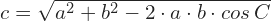
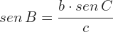
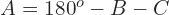

Un triángulo oblicuángulo es aquel que no es recto ninguno de
sus ángulos, por lo que no se puede resolver directamente por el teorema
de Pitágoras, el triángulo oblicuángulo se resuelve por
leyes de senos y de cosenos, así como el que la suma de
todos los ángulos internos de un triángulo suman 180 grados.
Conociendo un lado y dos ángulos adyacentes a él
Para encontrar el ángulo A restante aplicamos
Para calcular b aplicamos el teorema de los senos
Para calcular c aplicamos el teorema de los senos
Conociendo dos lados y el ángulo comprendido
Para encontrar el lado c restante aplicamos el teorema de los cosenos
Para calcular el ángulo B aplicamos el teorema de los senos, considerando los recíprocos
Para encontrar el ángulo faltante



Conociendo los tres lados
Para encontrar el primer ángulo, digamos el ángulo A, aplicamos el teorema del coseno
Para calcular el segundo ángulo aplicamos nuevamente el teorema del coseno